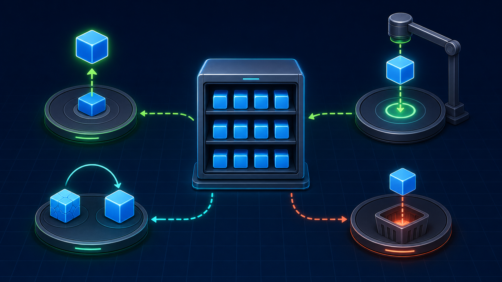

2편 · 22분 — 주소 설계와 파일 쪼개기
주소마다 다른 일을 하는 서버. 주소 설계 규칙 REST를 잡고, CRUD 서버를 만든다.
| 메서드 | 의미 | 예시 |
|---|---|---|
GET | 조회 | GET /users |
POST | 생성 | POST /users |
PUT | 수정 | PUT /users/1 |
DELETE | 삭제 | DELETE /users/1 |

restServer.js — users 객체를 DB 대용으로 (데이터: 박서연)URL 클래스 도입100줄을 넘긴 파일을 쪼갠다. 노드의 두 모듈 시스템(CJS·ESM)을 실습으로 익힌다.
module.exports / requireexport / import로 바꿔보기__dirname이 없어지는 것 확인 → import.meta.url// math.js module.exports = { add }; // app.js const { add } = require('./math');
// math.js export { add }; // app.js import { add } from './math.js';